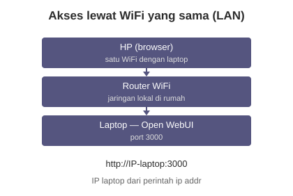
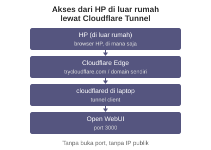

Mengakses AI Lokal dari HP via Jaringan Lokal & Cloudflare Tunnel
Home > Tutorial > Mengakses AI Lokal dari HP via Jaringan Lokal & Cloudflare Tunnel
Arsip
- Instal Apache, MySQL, PHP dan phpMyAdmin di Archlinux 2021
- Konfigurasi Virtual Host Apache Server Di ArchLinux 12 Jun 2021
- Cara Deploy Blog Statis ke GitHub Pages 17 Nov 2026
- Cara Daftar make.fun dengan Agent dan Biar Agent Cari Bounty Sendiri 17 Nov 2026
- Cara Berburu Bug Bounty dengan Agentic-Bug-Hunter (Gratis, AI Lokal) 18 Nov 2026
- Cara Pasang Google Analytics 4 dan Tag Manager di Blog Statis 26 Nov 2026
- Cara Optimasi SEO Blog GitHub Pages 26 Nov 2026
- Cara Ikut Bounty make.fun Pakai AI Agent 26 Nov 2026
- Cara Bikin Bot Tank di battle.training 26 Nov 2026
- Cara Bikin USB Bootable Ventoy (Kedetek di HP dan Laptop) 26 Nov 2026
- Rekomendasi Linux ISO Kecil dan Ringan untuk Laptop Lama (Kentang) 28 Nov 2026
- AI Lokal di Linux: Ollama + Open WebUI di Laptop Kentang (CPU Only) 28 Nov 2026
- Mengakses AI Lokal dari HP via Jaringan Lokal & Cloudflare Tunnel 28 Nov 2026
Setelah AI lokal jalan di laptop, langkah berikutnya adalah membukanya dari HP — supaya kamu bisa chat dengan AI-mu sambil rebahan, tanpa harus duduk di depan laptop. Ada dua situasi: di rumah (HP dan laptop satu WiFi) dan di luar rumah (HP di mana saja).
Prasyarat: tutorial sebelumnya sudah selesai — Ollama dan Open WebUI sudah jalan di laptop (AI Lokal di Linux: Ollama + Open WebUI di Laptop Kentang).
Cara 1: Jaringan Lokal (WiFi yang Sama)
Kalau HP dan laptop terhubung ke WiFi yang sama, ini cara paling gampang — tidak perlu install apa pun. Cari dulu alamat IP laptopmu:
ip addr
Cari baris
inet di interface WiFi-mu (biasanya wlan0 atau wlp2s0) — misalnya 192.168.1.10. Lalu buka browser HP dan ketik:
http://IP-laptop:3000
Contoh: kalau IP laptopmu
192.168.1.10, buka http://192.168.1.10:3000. Open WebUI akan terbuka seperti di laptop — login dengan akun admin yang kamu buat di tutorial sebelumnya.

Gambar 1: Akses lewat WiFi yang sama (LAN) — HP dan laptop satu jaringan.
Tips: Open WebUI adalah PWA — di browser HP, pilih "Add to Home Screen" (atau "Tambah ke layar utama") dan ia akan tampil seperti aplikasi, lengkap dengan ikonnya sendiri.
Cara 2: Cloudflare Quick Tunnel (Coba-Coba)
Di luar rumah, IP lokal tidak bisa dijangkau — kamu butuh tunnel. Cara paling cepat: Cloudflare Quick Tunnel, tanpa akun dan tanpa membuka port di router. Install dulu
cloudflared (Debian/Ubuntu):
curl -L https://pkg.cloudflare.com/install.sh | sudo bash
sudo apt install cloudflared
sudo apt install cloudflared
Lalu jalankan satu perintah ini di laptop:
cloudflared tunnel --url http://localhost:3000
Cloudflared akan menampilkan URL acak seperti
https://<kata-kata>.trycloudflare.com — buka URL itu di browser HP, dari mana saja. Tanpa akun, tanpa buka port, tanpa IP publik.
Tapi ada batasannya, jadi cara ini hanya untuk coba-coba: URL berubah setiap kali tunnel di-start ulang, tunnel mati begitu kamu menekan
Ctrl-C, dan URL-nya PUBLIK — siapa pun yang punya link bisa membuka WebUI-mu.

Gambar 2: Akses dari HP di luar rumah lewat Cloudflare Tunnel.
Cara 3: Named Tunnel (Permanen)
Kalau mau URL yang tetap dan tunnel yang jalan terus, pakai named tunnel. Yang dibutuhkan: akun Cloudflare gratis dan domain yang DNS-nya dikelola Cloudflare. Langkah-langkahnya:
1. Login dan buat tunnel.
cloudflared tunnel login
cloudflared tunnel create ai-laptop
cloudflared tunnel create ai-laptop
2. Arahkan subdomain ke tunnel.
cloudflared tunnel route dns ai-laptop ai.domainmu.com
Ganti
ai.domainmu.com dengan subdomain milikmu.
3. Buat file konfigurasi
~/.cloudflared/config.yml — isinya nama tunnel, file kredensial, dan ingress yang mengarahkan hostname ke Open WebUI:
tunnel: ai-laptop
credentials-file: ~/.cloudflared/<id-tunnel>.json
ingress:
- hostname: ai.domainmu.com
service: http://localhost:3000
- service: http_status:404
credentials-file: ~/.cloudflared/<id-tunnel>.json
ingress:
- hostname: ai.domainmu.com
service: http://localhost:3000
- service: http_status:404
4. Jalankan tunnel.
cloudflared tunnel run ai-laptop
5. Supaya jalan otomatis saat boot, install sebagai service:
sudo cloudflared service install
Perhatian: Begitu WebUI-mu bisa diakses dari internet, kunci pintunya. Pasang Cloudflare Access (Zero Trust, gratis sampai 50 pengguna) di hostname tunnel supaya hanya kamu yang bisa login. Jangan pernah mengekspos Ollama di port
11434 langsung — dan pakai password admin Open WebUI yang kuat.
Troubleshooting Singkat
- URL Quick Tunnel berubah tiap start → pakai named tunnel (Cara 3).
- HP tidak bisa membuka
IP:3000 di WiFi → pastikan HP dan laptop satu jaringan, dan cek firewall laptop.
Referensi
- https://flaviocopes.com/cloudflare-quick-tunnels/
- https://dev.to/recca0120/cloudflare-tunnel-in-2026-expose-localhost-without-opening-ports-or-buying-an-ip-32l5
- https://dev.to/coder-safal/how-to-expose-localhost-to-the-internet-with-free-https-cloudflare-tunnel-no-port-forwarding-e6o
Suka tutorial ini? Dukung penulis biar makin banyak tutorial gratis.
Dukung via Saweria